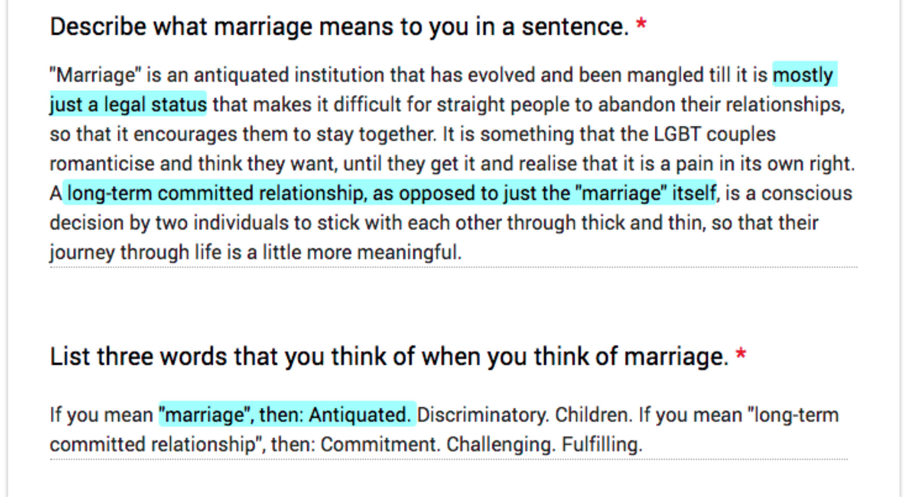

Roles and Responsibilities
A look at the history of marriage (Gendler, 2014)
Tip 4: Ask yourself if marriage is the answer
What do you think most of our survey respondents associated with marriage? When asked to describe the meaning of marriage, most of the responses went along the lines of “lifelong commitment/partnership” and “a legitimate way to have a family”.
One survey respondent voiced the opinion marriage is an outdated institution and is “mostly just a legal status”, which is not necessarily synonymous with a long-term committed relationship.
Only one response out of 39? Wait! Do not dismiss it as an outlier just yet! This comment highlights the importance of being aware of what you are looking for in getting married. Is the goal of marriage an end in itself, or are you looking for the things that are commonly associated with marriage instead - a meaning in life; meeting your parents’ expectations; meeting the government’s criteria to apply for housing?
Gendler’s video above shows how ideas of marriage are transformed and shaped by society. However you too should bring in your own beliefs and assess your needs before making the decision to tie the knot.
Tip 5: Be ready to take on new roles and expectations
We hate to break it to you, but the honeymoon phase will end.
Marriage involves expectations of raising adorably competent children and staying fiercely monogamous (Gendler, 2014), which were echoed by our survey respondents. Additionally, an analysis of top comments from a marriage-related subreddit revealed practical issues to consider, such as the wedding expenses and housing situation.
Further, the move away from traditional gender-based roles towards the notion that men and women have identical obligations within a marriage (Drake, 2015). Husbands can no longer shrug-off dishwashing duties, and more wives will enter the workforce to contribute to the household finances.
Just brace yourself for the eventual disillusionment by planning ahead and be ready to take on new roles and expectations within and outside of the marriage.
Tip 6: Marriage is not just about you and your partner
The whole world doesn't revolve around you. Similarly, marriage is not just about you and your partner. The focus of your marriage can move beyond the both of you over time, with other factors that contribute to creating meaning and sustaining the marriage.
What does this mean for you? Along with being ready to take on new roles responsibilities, you need to consider your duties outside of your relationship. While families are getting smaller and people are focusing more on individual pursuits (Gendler, 2014), the presence and influence of family members and in-laws, as well as the changes that children can bring to a marriage cannot be overlooked.
Made it this far? Go on to our next section to learn how you can make your marriage last.
References
Gendler, A (2014, February 13). The history of marriage. Retrieved from https://www.youtube.com/watch?v=ZZZ6QB5TSfk
Drake, K. S. (2015). All Things Are Possible: Songs and Prose, Xlibris AU.